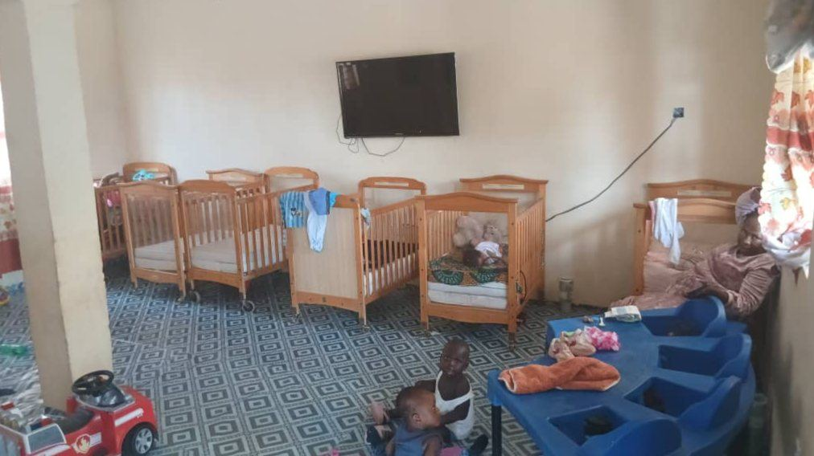
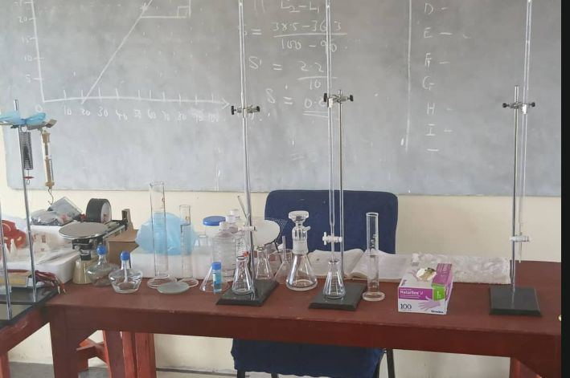
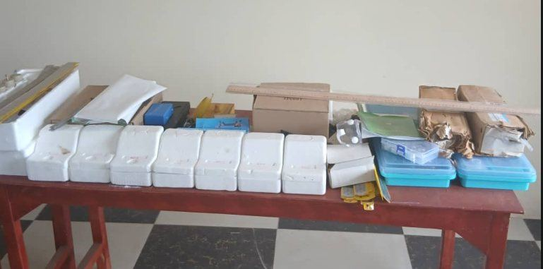
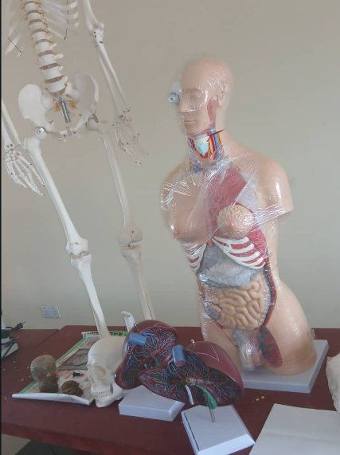
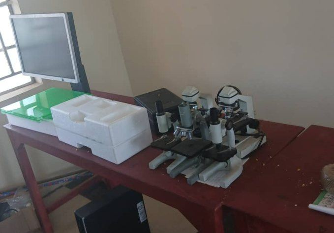
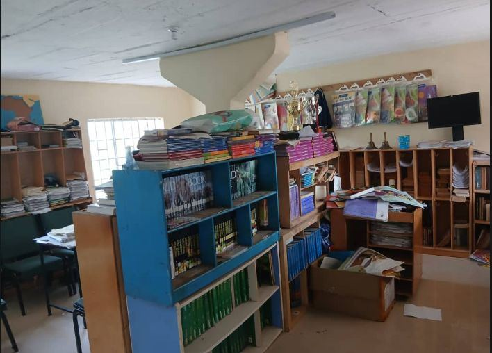
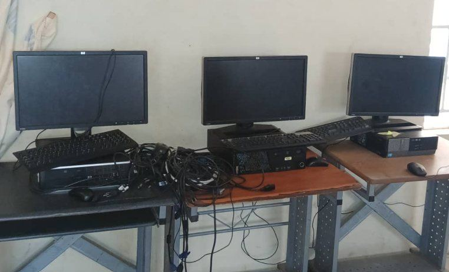
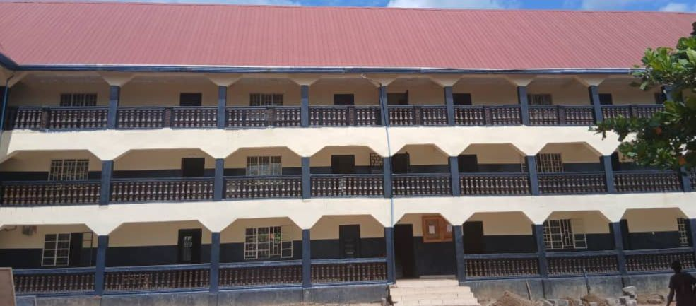

Academic Programmes
A balanced education from Day-care to Senior Secondary School, taught with care and measured with fair, regular assessment.
A strong foundation for lifelong learning
At Gbonkolenken International Academy we offer a well-rounded education that builds academic excellence, creativity, leadership and practical skills, from Day-care through Senior Secondary School.
- Levels
- 16 classes
- Terms
- First, Second, Third
- Exams
- BECE and WASSCE

Day-care
Early years care
Our Day-care gives our youngest learners a safe, warm and stimulating place to begin. Through guided play and a gentle daily routine, children develop socially, emotionally and physically.
- Age
- 2–3 years
- Coordinator
- Day-care Coordinator
What we aim to do
- Provide a safe and caring environment
- Support sensory and motor development
- Build early social skills through play
- Establish healthy daily routines
- Give each child emotional security and comfort
Focus areas

Kindergarten
Kindergarten 1, 2 and 3
Kindergarten children learn through play and activity in bright classrooms with child-sized furniture. They grow in confidence, language, number sense and good character.
- Classes
- K1, K2, K3
- Coordinator
- Kindergarten Coordinator
What we aim to do
- Develop early reading and number skills
- Encourage creativity and imagination
- Build confidence and independence
- Promote friendship and teamwork
- Nurture good character and positive values
Subjects

Grade School
Strong academic foundations
The Grade School equips learners with the knowledge, skills and values for future success, while encouraging curiosity, discipline and a love of reading.
- Classes
- Grade 1 to Grade 6
- Coordinator
- Grade Coordinator
What we aim to do
- Strengthen reading, writing and number skills
- Develop thinking and problem-solving
- Encourage creativity
- Build confidence in speaking and writing
- Promote leadership and teamwork
Subjects

Junior Secondary School
J.S.S 1, 2 and 3
The Junior Secondary programme prepares students for Senior Secondary School and for the Basic Education Certificate Examination (BECE), while widening their knowledge and building independence.
- Classes
- J.S.S 1 to J.S.S 3
- Coordinator
- Junior Secondary Coordinator
What we aim to do
- Prepare students for the BECE
- Strengthen communication skills
- Build a love of Science and practical work
- Encourage responsible citizenship
- Prepare students to choose a Senior Secondary department
Subjects

Senior Secondary School
S.S.S 1, 2 and 3
Senior Secondary students join the Science, Art or Commercial department and prepare for the West African Senior School Certificate Examination (WASSCE), for further education and for their chosen careers. Every student also takes the General Core subjects.

| Science | Commercial | Art | General Core (all students) |
|---|---|---|---|
|
|
|
|
How every course is taught and assessed
Every programme joins classroom teaching with practical learning. Students are assessed through classwork, tests, practical work, projects and end-of-term examinations.
- Classroom lessons led by qualified teachers
- Practical laboratory lessons in Science
- Demonstrations and guided practice
- Group work, projects and assignments
- Reading time and library use
- Continuous assessment and feedback
- Guidance and care from Form-masters
- End-of-term examinations and BECE or WASSCE preparation
What supports every student






Three terms, one steady rhythm
First Term
The year begins: orientation, new classes and the first assessments.
Second Term
Mid-year tests, school activities and meetings with parents.
Third Term
Final examinations, promotions and prize-giving.
What parents value
Qualified teachers
Dedicated teachers and Form-masters who know each learner.
Balanced learning
Classroom study, practical work and good character together.
Clear exam pathway
Steady preparation for the BECE and the WASSCE.
Safe, disciplined school
An orderly, respectful and caring school community.
Partnership with parents
Regular contact through the school office and the School Portal.
Guidance for fees and places
The Finance Office and Admissions team will gladly answer your questions.
Find the right level for your child
From Day-care to Senior Secondary School, GIA has a place for every learner.